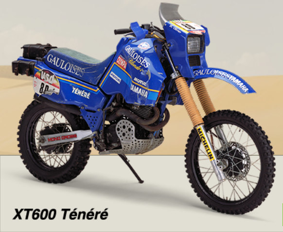

L'Art de la Restauration : Redonner Vie à une Classique
Publié le 15 juin 2023
La semaine dernière, nous avons eu le plaisir de terminer la restauration d'une magnifique Honda CB750 de 1969. Ce projet a été un véritable défi, mais aussi une source immense de satisfaction. Nous vous emmenons dans les coulisses de cette restauration passionnante...
La Honda CB750 est une moto emblématique qui a révolutionné l'industrie lors de son lancement. Notre client nous a confié sa CB750 dans un état qui nécessitait une restauration complète. Nous avons commencé par un démontage minutieux, documentant chaque étape...
Lire la suite

Préparation Moto pour le Grand Paris Dakar Classic
Publié le 20 mai 2024
L'excitation est à son comble ! Nous sommes fiers d'annoncer que nous préparons actuellement une Yamaha XT600Z Ténéré de 1983 pour le prochain Grand Paris Dakar Classic. Dans ce post, nous partageons les défis uniques liés à la préparation d'une moto pour cette aventure épique...
La préparation d'une moto pour un rallye comme le Paris Dakar Classic nécessite une approche différente de nos projets habituels. Nous devons non seulement restaurer la moto à son état d'origine, mais aussi l'améliorer pour qu'elle puisse endurer les conditions extrêmes du désert... pour que ce soit au Bénin à Zè pour des activités organisées localement.
Lire la suite